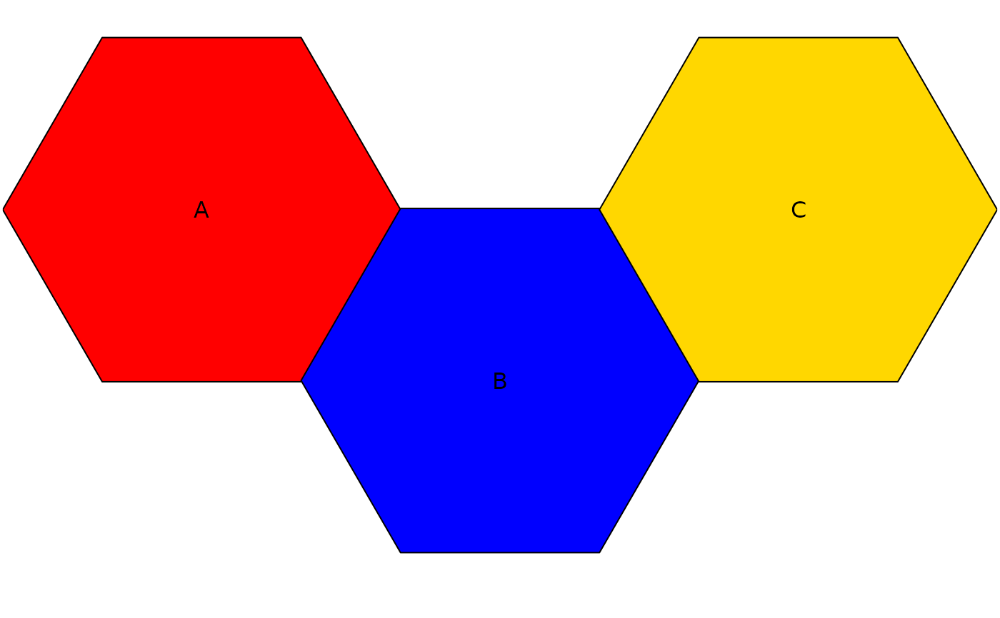
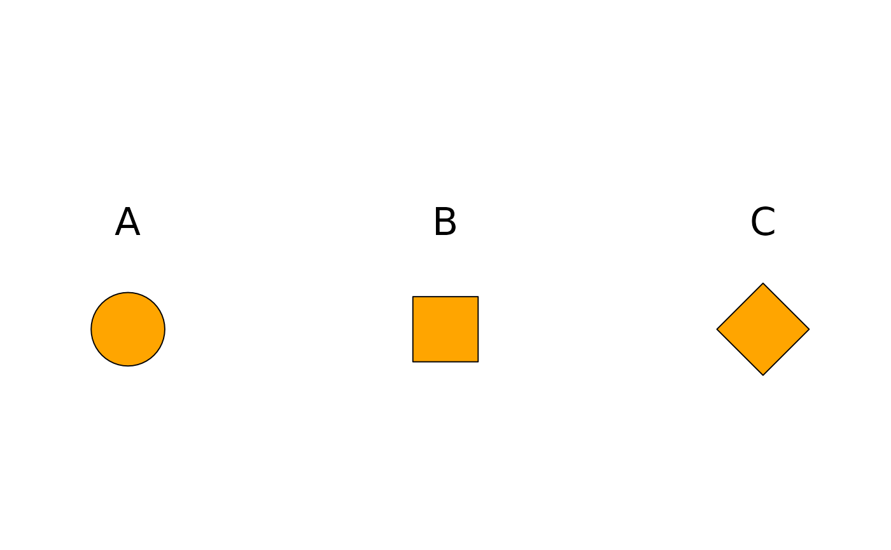

Make a ggplot discrete scale that has consistent correspondence between aesthetics and variables
Usage
make_consistent_scale(
values,
vars,
type = c("fill", "color", "shape"),
show.example = F,
name = NULL
)Arguments
- values
vector, values to supply to given scale (e.g. colors or shapes)
- vars
character, variables to link to values. Will have one to one correspondence to values based on order
- type
character, either "fill", "color" or "shape"
- show.example
boolean, print a plot to show what values are tied to which variables
- name
optional, string to name scale, will appear as legend heading when used in a ggplot
Examples
# These are some variables you'll be working with.
# We want to retain the correspondence between a color/shape in plots
# and these variables.
my.vars <- c("A", "B", "C")
# fill
my.scale <-
make_consistent_scale(
values = c("red", "blue", "gold"),
vars = my.vars,
show.example = TRUE)

# shape
my.scale <-
make_consistent_scale(
values = c(21, 22, 23),
vars = my.vars,
type = "shape",
show.example = TRUE)

# will retain correspondence when a level is dropped
plot.df <- data.frame(
vars = my.vars[-2],
value = c(2,1))
ggplot(data = plot.df, aes(x = value, y = 1)) +
geom_point(aes(shape = vars), fill = "orange", size = 10) +
geom_text(aes(y = 1.1, label = vars)) +
my.scale +
ggplot2::theme_void() +
ylim(.75, 1.25) +
xlim(.5, 2.5) +
theme(legend.position = "bottom")
#> Error in ggplot(data = plot.df, aes(x = value, y = 1)): could not find function "ggplot"